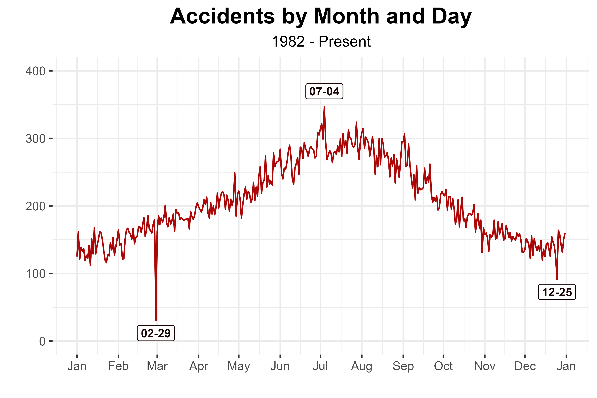

Doesn't ever feel like airplane crashes are becoming more common and flights are becoming more dangerous. Just these past few months alone, I can recall the the January crash of an American Airlines flight with military helicopter, killing all passengers on board including a figure skating team. Then, in February, a Delta flight flipped itself during landed and started on fire in Canada (luckily everyone survived) In March, a small one engine plane crashed into a suburbam neighborhood, setting a destroyed house on fire. The houseowners escaped but the pilot died in the crash.In April, although not an airplane, a helicopter crashed into the Hudson river during a sightseeing flight. This seems like a pretty bad lineup of major infamous aviation accidents into the few months of 2025.
The crazy up and down of the aviation industry during Covid has not helped the situation. In 2020, many pilots and crew were let go due to very little flights needed amidst the pandemic lockdowns. Then, when quarentines and outspreads lifted, there was an extreme and panicked need for all aviation workers. Nowadays, young, clear-faced pilots not much older than 18 can be seen boarding the cockpit (I always hear a few prayers muttered from fellow passengers when that happens).
When there is confusion and anxiety, it can be solidifying to see what data has to say about the subject. Could it be that there are more serious mistakes in aviation today? Can we still trust our planes and pilots to be competentent and safe? What are the main causes of all these accidents? Let's look at the actual aviation safety reports to see what is occurring behind the scenes...

The above graph shows the number of airplane accidents that occurred per the year listed on the x-axis. As you can see, there is a clear and consistent negative trend as the years progress. In other words, aviation accidents are occurring in smaller numbers the more time progresses. Specifically, you can see a small but notable dip of accidents in 2020. This seems to show the decrease in aviation flight amidst the first year of the covid pandemic. With less flights, and less people wanting to fly, less accidents are bound to happen. This dataset does not take into account the number of flights occurring every year. Flying commercially and privately has become more common than in the 1980s. It would be interesting to see how flight accidents would decrease compared to the change in flights held. My best hypothesis would be that the percent of flights that experience an accident would be drastically appear less than the percentage of flights in which an accident occurred in the 1900s. Thus, although news report and tragic stories of plane crashes may seem like aviation is becoming more dangerous, it seems like there are less and less accidents to report.
If you were curious at the timeline of when accidents occurred last year, the above graph similarly shows a timeline, except it is divided by month. The horizontal axis now shows the day of the year instead the year itself. The vertical axis one again represents the counts of accidents. Interestingly, last January and December had relatively low levels of accidents everyday compared to the summer months. July has the highest spikes of accidents. Possibly the summer travel rush creates plenty of opportunities for error and rushing that could cause accidents. While the summer does not have winter storms, the typical humid and hot temperament of summer can cause nasty thunderstorms, rain, and wind. Perhaps summer weather also contributes to this rise in accidents. So, if you are planning that nice family trip, just know that more travelers and traffic can cause extra incidents and accidents to occur. Don't freak out though! Remember the graph above, showing that accidents are becoming way less common, so the risk is up for your discretion.
It is important to look at seasonal trends when analyzing plane accidents. The graph produced above shows the general annual timing of accidents. There is a clear increase of accidents of accidents from the winter into the summer months, and a decrease back down from summer to the end of the year. Accumulating all of the data, the number of accidents peaks at the beginning of July (Happy Fourth of July I guess). The most logical guess at why seems to match our analysis from above. The sheer volume of travel in the summer could be the main cause of consistent increase of incidents. Or, maybe the heat and humidity affects the planes poorly. Or, maybe the pilots, ground crew, and ATC all get a little crankier in the heat. I know I would.
As you can see, the minimum number of cases lands on February 29th. Before any of you go and buy plane rides for February 29th, remember that the 29th is Leap day (as in the day that occurs every four years). Thus since the 29th only occurs every so years, that minimum is not actually accurate to the seasonal accident trends.
Another minimum occurs in December. Depending on your December traditions, it may seem like a surprise or very predictable that Christmas day typically has a lull in incidents. It would make sense guessing most people stay home and flights can sometimes be limited on the popular holiday. However, some people like to fly on Christmas to quicky get to or leave family members. I know of others who prefer to fly Christmas day when there are major deductions in ticket prices. It is clear though that the magical safety of that day is gone the day before and after when it spikes again. The Christmas season can be busy with travelling so that is not too surprising. So, if you take away one thing from this graph, it would be that Christmas day is a merry time but stay on the ground for fourth of July. Better yet, book a fligh in January (lower costs and lower flight accidents).
If you often wonder why plane accidents occur, you are not alone. One obvious explanation I imagine is extreme weather occurrences, but what about those random accidents that just leave you feeling stumped on why they occurred in the first place? Placing cause is usually a complicated task more than it is a simple one. Every event can have more than one cause and many events are created from a chain of mistakes and challenges. However, the above pie chart shows the proportion the area of aviation that was decided to be a cause/factor of accident by the NTSB (National Transportation and Safety Board) in the last 5 years.
Personnel refers the the people working in and for the plane at that time. Clearly that could be the pilot but other people include the ground crew, ATC (the people on radar communicating with the pilot), and airpot management. The aircraft involves the system, functionality and design of the plane. The environment both refers to the physical environmnet at the time of the accident (weather) but just as important the airport and social surroundings involving the plane. Not determined either means that the NTSB could not accurately decide the cause of the event, or that the NTSB views the cause as unique and not categorizable into the other categories. Organization refers to the management of the plane, airport, or crew.
By the pie chart, personnel and aircraft seem to be the main area in which problems or challenges occurred. However, keep in mind these categories can be somewhat subjective. For example, there were quite a few cases in which the problem was deemed the aircraft's fault since the brakes somehow did not perform efficiently. Now one explanation for the breaks not working right could be mechanical errors or age of the plane. However, could it not be that the pilot controlling the plane placed the aircraft in a position in which the breaks could not sufficently stop or slow the airplane down in time? Maybe the owner of the plane missed a required inspection in which the breaks would have be caught before an accident could occur? It is not clear how the NTSB decides and notes the differences between these details. Even so, the decision of cause could be more subjective on a case to case basis. Thus, this graph should provide a general idea of what area problems are arising. However, the exact proportions are probably not very accurate. It seems that most pilots and officials believe a far greater proportion of accidents involved human error (and before you go pointing fingers as the citizens or customers of flight travel, there are so many details and steps that gets a plane up and flying, and safely back down again).

A little more explanation can be gained by what seeing what type of problem involved the blamed subject of cause. The following column graph represents the most common reasons compared to the least common reasons. The coloring matches with the previous pie chart on who/what aviation area was involved. Somewhat surprisingly task management pulled in the lead. I guess communication and organization is as important as everyone says it is. It also seems the mechanics and system of the aircraft commonly contributes problems to accidents.
While the data did contain latitudes and longitudes of most aviation accidents, unfortunately many data points were collected in differing formats. It seemed like enough of the accidents worldwide were disordered in which I could not trust the location of a significant portion of accidents. There were too many data points to reformat and too many ways to reformat them (believe me, I tried). However, since the state and city location of the accidents remained accurate, there is still something that can be gained in viewing where accidents occurred in the United States. The four states that immediately stand out with high counts of accidents are California, Texas, Florida and Alaska. California, Texas, and FLorida all have higher state populations, so it is not surprising that they each have higher accidetn counts. However, if we apply this same population logic, some of the states on the East coast like New York and Pennsylvania should have equally high rates. Nevertheless, no state in the East has high rates of accidetns by any means. I am especially shocked New York does not have more accidents knowing their high population and two busy airports (John F. Kennedy and Newark). Not many people live in Alaska and they have a very low population density. I wonder if their high accident count could have to do with the weather and environment.
The above map shows where plane accidents have occurred in the United States. The four states that immediately stand out with high counts of accidents are California, Texas, Florida and Alaska (good luck to those of you who live in california). Now most of those four states have high population counts. If a state has more people, it probably also has more traffic and flight going in or out of that state. More flights mean more possibilities for error. Thus, it may seem like the high accident counts are because of population alone. However, that same logic would have highlighted some Eastern states like New York and Pennsylvania would have matching highlight. Surprisingly, no eastern states stand out. Not even New York who has two major international airports (John F. Kennedy and Newark). Alaska, for their low population count and even lower population density has decently high counts of airplane accidents. Maybe the weather and natural environment is harsh enough to cause serious flight problems.